1 Überblick zu Stata
Hier sehen wir die Startansicht von Stata:Figure 1.1: Startansicht Stata16
Die Standardansicht von Stata besteht aus mehreren Fenstern:
- Kommandos/Befehle
- Ergebnisse
- Variablenübersicht
- Übersicht zu den geladenen Daten
- Befehlshistorie
1.1 Taschenrechner
In das Befehlsfeld (1) können wir Kommandos eingeben, z.B. eine Berechnung durchführen. Dazu geben wir zunächst den Befehl display und dann die gewünschte Rechnung ein und drücken dann Enter. Der Befehl wird dann im Ergebnisfenster gespiegelt und darunter das Ergebnis ausgegeben:

Wir können display auch mit dis abkürzen.
1.2 Darstellung in diesem Skript
Eingaben und Ergebnisse werden im weiteren Skript so dargestellt:
display 3 + 1215display sqrt(9)31.3 DoFile Editor
Zwar funktioniert die direkte Eingabe in das Befehlsfeld, allerdings werden für Auswertungen sehr viel längere und komplexere Befehle und längere Befehlsfolgen verwendet. Für solche Anwendungen werden in Stata sog. DoFiles angelegt. Darin können Befehle entworfen und für eine spätere Verwendung abgespeichert werden. Um ein DoFile zu öffnen geben wir entweder doedit in das Befehlsfeld ein oder klicken auf das Feld “New Do-file-Editor” rechts oben:
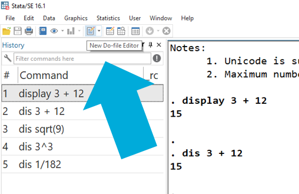
Es öffnet sich ein neues Fenster:
 In diesem sog. Do-File-Editor können wir Befehle entwerfen. Wenn wir diese dann durchführen möchten, markieren wir die entsprechenden Zeilen und drücken STRG + D. Die ausgeführten Befehle werden wieder im Ergebnisfenster gespiegelt und jeweils darunter die Ergebnisse angezeigt:
In diesem sog. Do-File-Editor können wir Befehle entwerfen. Wenn wir diese dann durchführen möchten, markieren wir die entsprechenden Zeilen und drücken STRG + D. Die ausgeführten Befehle werden wieder im Ergebnisfenster gespiegelt und jeweils darunter die Ergebnisse angezeigt:

Das DoFile können wir speichern, um es später wieder aufzurufen. Wichtig ist dabei, der gespeicherten Datei die Endung “.do” zu geben, also zum Beispiel “01_Einstieg.do.” Diese DoFiles können dann einfach ausgetauscht werden, um später daran weiter zu arbeiten oder Analysen für Dritte nachvollziehbar zu machen.

1.4 Datensätze laden
Das ist aber alles soweit sehr unspektulär - es gibt schönere und günstigere Taschenrechner als Stata. Die eigentliche Stärke von Stata ist die Analyse von Datensätzen. Diese müssen zunächst eingelesen werden. Im einfachsten Fall liegen die Daten als Stata-Datensatz (mit der Endung .dta) vor und wir können die Daten wie folgt einlesen:
cd "C:/Kurse/Stata_BIBB/data/"
use "BIBBBAuA_2018_suf1.0.dta"Der Einlesevorgang besteht also aus zwei Befehlen: zuerst geben wir cd den Pfad an, unter welchem der einzulesende Datensatz zu finden ist. Natürlich hängt der Dateipfad aber ganz davon ab, wo Sie den Datensatz gespeichert haben, hier ist es “C:/Kurse/Stata_BIBB/data/”:
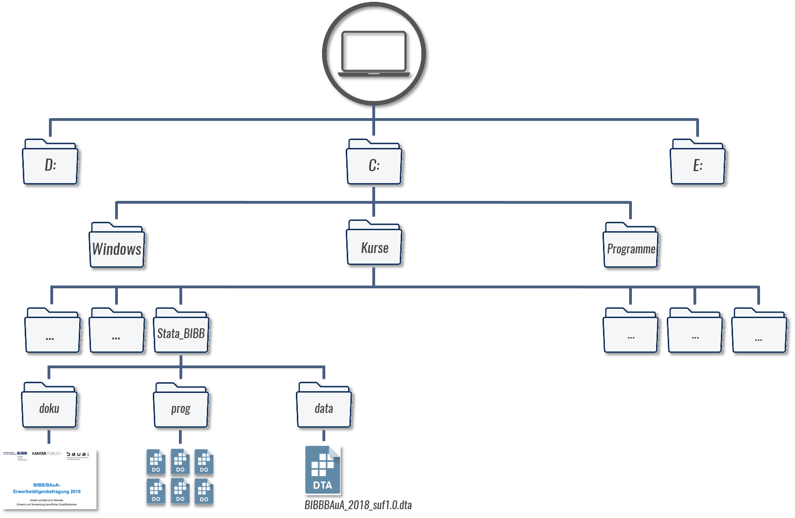 Um den Pfad des Ordners herauszufinden, klicken Sie bei Windows in die obere Adresszeile im Explorerfenster: 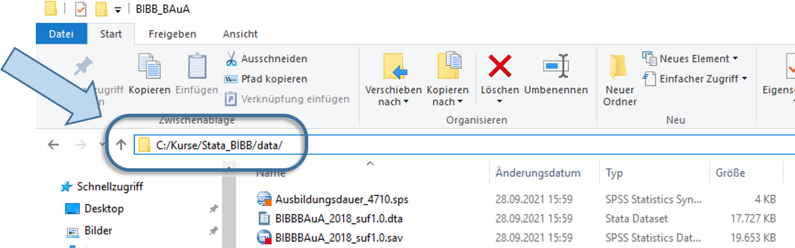
In iOS (Mac) finden Sie den Pfad, indem Sie einmal mit der rechten Maustaste auf die Datei klicken und dann die ALT-Taste gedrückt halten. Dann sollte die Option “…als Pfadname kopieren” erscheinen. Youtube Anleitung
Hat das funktioniert?
Wir haben zwei Möglichkeiten zu das aktuelle Arbeitsverzeichnis überprüfen: wir sehen das aktuelle Arbeitsverzeichnis im Stata-Fenster links unten oder wir geben pwd ein:

Wir können diese beiden Schritte natürlich auch einfach kombinieren und den gesamten Pfad nach use angeben:
use "C:/Kurse/Stata_BIBB/data/BIBBBAuA_2018_suf1.0.dta"Wenn das funktioniert hat, dann sehen wir im Fenster rechts eine Variablenübersicht: 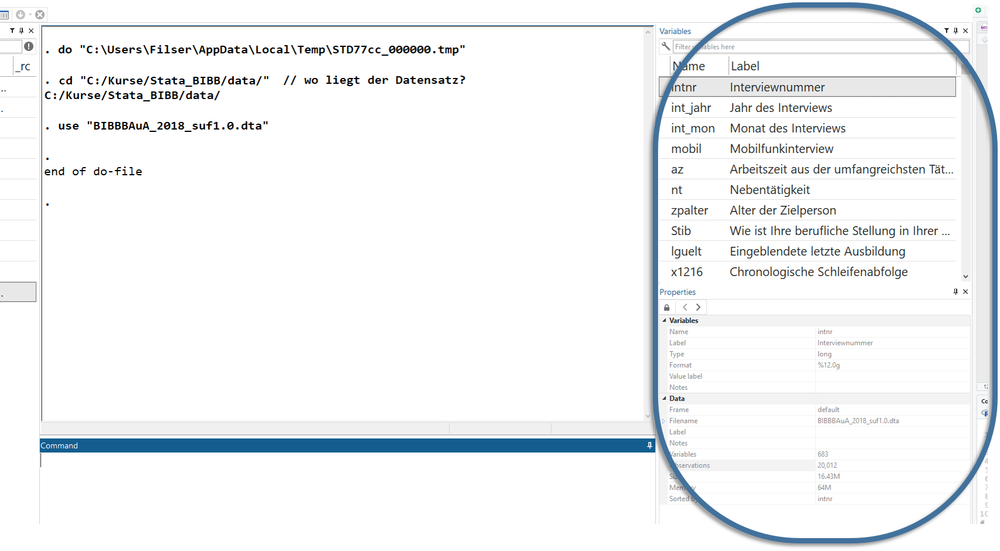
1.5 Daten, Codebücher, Fragebogen
Die Daten des hier geladenen Datensatzes enthalten die Angaben von 20012 Befragten der BIBB/BAuA-Erwerbstätigenbefragung 2018. Die BIBB/BAuA ist eine repräsentativbefragung von in Deutschland zu Arbeit und Beruf im Wandel und Erwerb und Verwertung beruflicher Qualifikation.
Das heißt, die hier geladenen Daten beruhen auf standardisierten Interviews. Derartige Datensätze werden in der Regel zusammen mit einem Codebuch, Methodenreport und dem Fragenkatalog veröffentlicht. Im Fragebogen der BIBB/BAuA 2018 finden wir den exakten Wortlaut der Fragen:
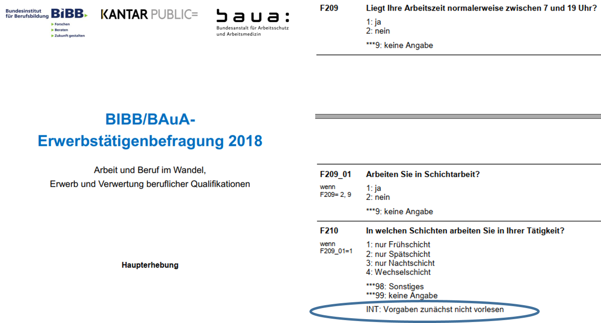
Hier sind auch die Anweisungen an die Interviewenden vermerkt, z.B. dass die Vorgaben zum Schichtmodell zunächst nicht vorgelesen werden sollen. Außerdem werden im Methodenbericht weitere Variablen vorgestellt, die bereits im Datensatz enthalten sind, beispielsweise das Alter der Befragten, der Wohnort und die berufliche Stellung:
Die Antworten der Befragten werden dann im Datensatz gesammelt. Dazu werden den Antworten in der Regel Zahlencodes zugewiesen (siehe die ganz linke Spalte im Fragebogen) und so abgelegt. Stata erlaubt dann in einem zweiten Schritt, dass diese Zahlen wieder mit Wertelabeln versehen werden - dazu kommen wir später. In diesem Datensatz entspricht dann jede Zeile einer befragten Person: 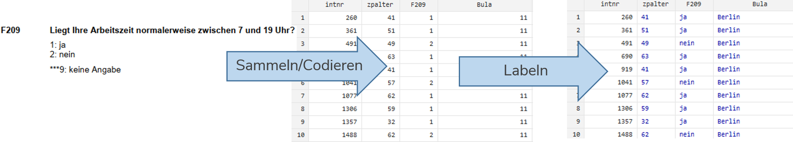 In Fragebogendokumentation finden wir Kürzel links oben, welche die Variablennamen für den Datensatz angeben.
1.6 Überblicksbefehle
Für eine erste Annäherung an die Daten helfen uns drei Überblicksbefehle: browse, describe und list. Zur Erinnerung: wir haben den Datensatz geladen:
cd "C:/Users/Andreas/Dokumente/Statistik/"
use "BIBBBAuA_2018_suf1.0.dta"1.6.1 describe
Mit describe, short bekommen wir einen Überblick zu den eingelesenen Daten:
describe, shortContains data from D:\Datenspeicher\BIBB_BAuA/BIBBBAuA_2018_suf1.0.dta
obs: 20,012
vars: 683 2 Nov 2021 17:34
Sorted by: intnrHier wurde also ein Datensatz geladen, welcher 20012 Fälle/Zeilen (obs) und 683 Variablen/Spalten (vars) enthält.
(Wir können den Befehl auch als d,s abkürzen)
Wir können den describe Befehl auch nutzen, um Informationen zu einer Variable zu erhalten. Dazu hängen wir einfach eine oder mehrere Variablen an describe an:
describe F209 storage display value
variable name type format label variable label
--------------------------------------------------------------------------------
F209 byte %8.0g F209 Liegt Ihre Arbeitszeit
normalerweise zwischen 7 und 19
Uhr?Hier sehen wir also in der ersten Spalte nochmal den vollständigen Variablennamen, den Variablentypen (storage type - mehr dazu hier) sowie - falls vorhanden - eine Beschreibung der Variable (variable label) sowie (ggf.) die Labels für Ausprägungen der Variable (value label).
Letztere können wir mit Hilfe von labelbook aufrufen (mehr zu Labels später):
labelbook F209value label F209
--------------------------------------------------------------------------------
values labels
range: [1,9] string length: [2,12]
N: 3 unique at full length: yes
gaps: yes unique at length 12: yes
missing .*: 0 null string: no
leading/trailing blanks: no
numeric -> numeric: no
definition
1 ja
2 nein
9 keine Angabe
variables: F209Wir können auch alle Variablen aufrufen, die mit F209 beginnen, indem wir einen * einsetzen:
describe F209* storage display value
variable name type format label variable label
--------------------------------------------------------------------------------
F209 byte %8.0g F209 Liegt Ihre Arbeitszeit
normalerweise zwischen 7 und 19
Uhr?
F209_01 byte %8.0g F209_01 Arbeiten Sie in Schichtarbeit?1.6.2 browse
Mit browse bekommen wir eine Ansicht des Datensatzes:
browse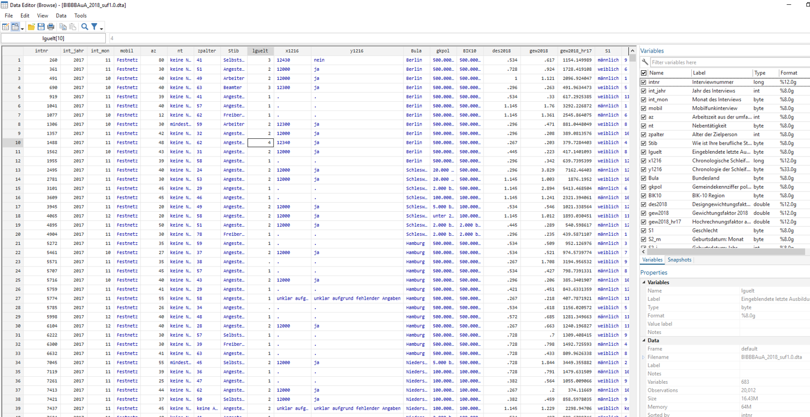
Wenn wir nur einige Variablen betrachten möchten, hängen wir diese einfach browse an:
browse intnr Bula gkpol Stib zpalter 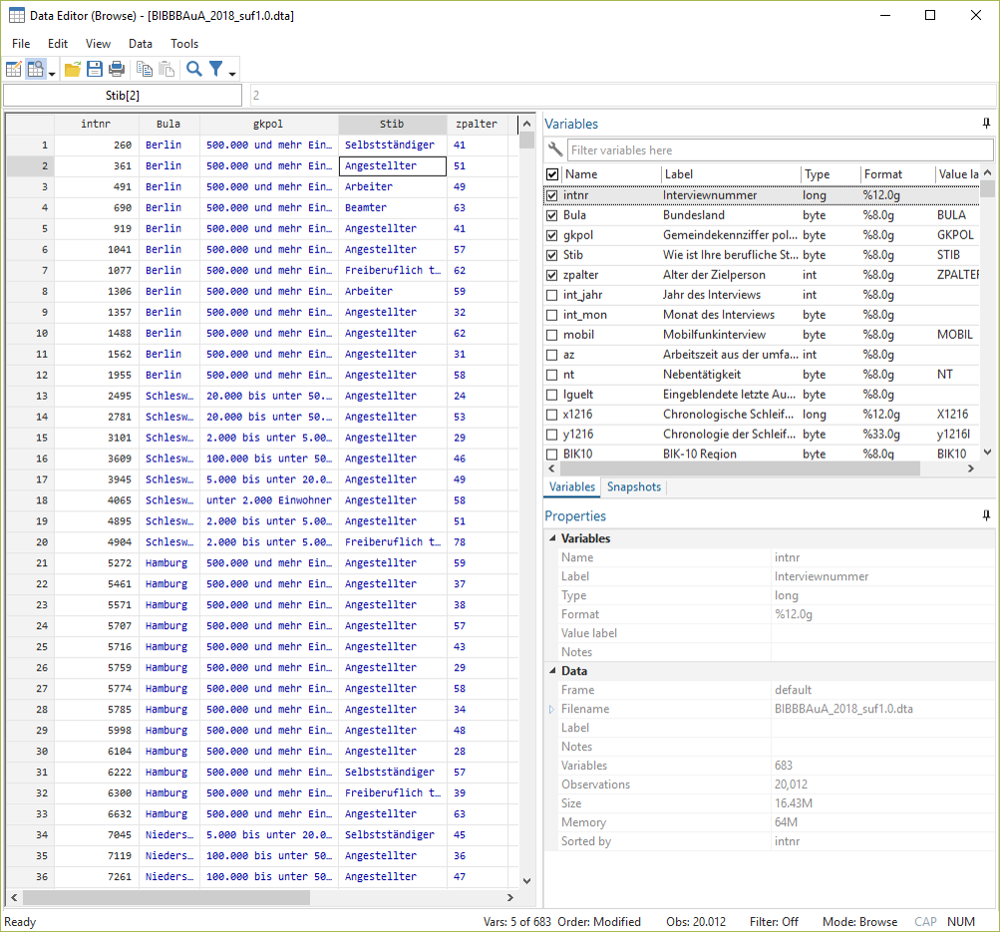
Hier bekommen aber immer die gelabelte Ansicht - allerdings stehen dahinter Zahlenwerte. Die Labels helfen uns, deren Bedeutung zu verstehen. Wenn wir aber wie in den nächsten Tagen auch mit den Daten arbeiten wollen, dann beziehen sich diese Operationen immer auf die dahinterstehenden Zahlenwerte. Diese bekommen wir mit der Option nolabel (oft auch einfach als nol abgekürzt):
browse intnr Bula gkpol Stib zpalter , nolabel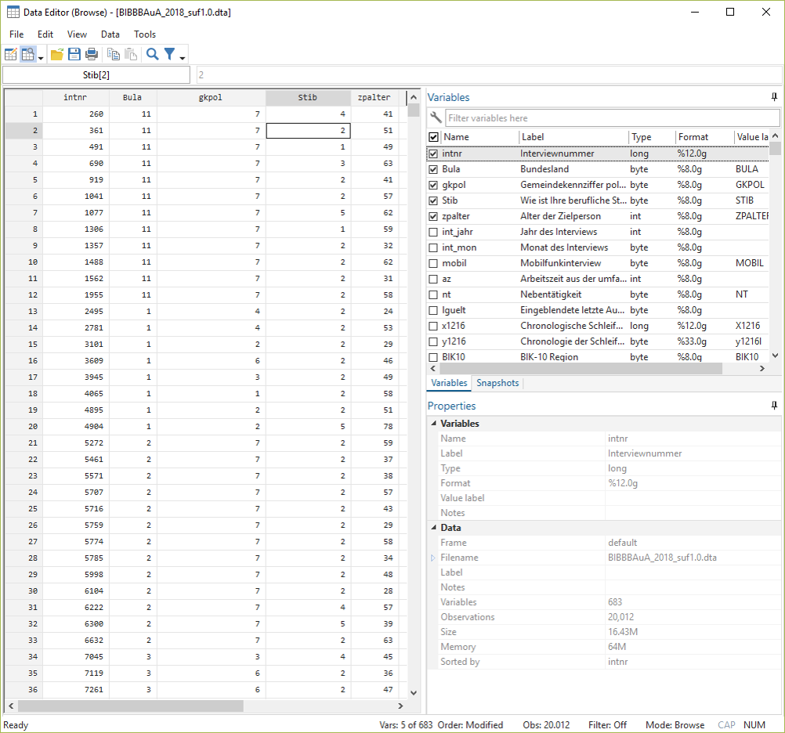
1.6.3 list
browse eignet sich vor allem für größere Übersichten. Wenn wir nur einige wenige Fälle betrachten möchten, dann ist list eine gute Alternative, da der Output hier gleich im Ergebnisfenster (2) angezeigt wird. Die Funktionsweise von list ähnelt sich im Prinzip der von browse. Mit dem Zusatz in 1/5 können wir die ersten 5 Zeilen anzeigen lassen (ansonsten würden alle 20012 Fälle angezeigt!):
list intnr Bula gkpol Stib zpalter in 1/5 | intnr Bula gkpol Stib zpalter |
|-----------------------------------------------|
1. | 260 Berlin 500.000 Selbstst 41 |
2. | 361 Berlin 500.000 Angestel 51 |
3. | 491 Berlin 500.000 Arbeiter 49 |
4. | 690 Berlin 500.000 Beamter 63 |
5. | 919 Berlin 500.000 Angestel 41 |
|-----------------------------------------------|Auch hier können wir wie bei browse die Zahlenwerte ohne die Labels anzeigen lassen, indem wir , nolabel anhängen:
list intnr Bula gkpol Stib zpalter in 1/5, nolabel | intnr Bula gkpol Stib zpalter |
|---------------------------------------|
1. | 260 11 7 4 41 |
2. | 361 11 7 2 51 |
3. | 491 11 7 1 49 |
4. | 690 11 7 3 63 |
5. | 919 11 7 2 41 |
|---------------------------------------|1.6.4 lookfor
All diese Befehle setzen aber voraus, dass wir wissen, unter welchem Variablennamen die interessierende Information abgelegt wurde. Mit lookfor "stichwort" können wir den Datensatz nach einem Stichwort durchsuchen:
lookfor "schicht" | is not a valid command name
r(199);
storage display value
variable name type format label variable label
--------------------------------------------------------------------------------------------------------------------------------------------------------------------------------------------------------
F209_01 byte %8.0g F209_01 Arbeiten Sie in Schichtarbeit?
F210 byte %8.0g F210 In welchen Schichten arbeiten Sie in dieser Tätigkeit?
F211 byte %8.0g F211 Um welche Schichten handelt es sich dabei?
F210_01 byte %8.0g F210_01 Belastet Sie das? (Schichtarbeit)Alternativ können wir auch in der Variablenübersicht mit Hilfe des Suchfelds nach Variablen suchen: 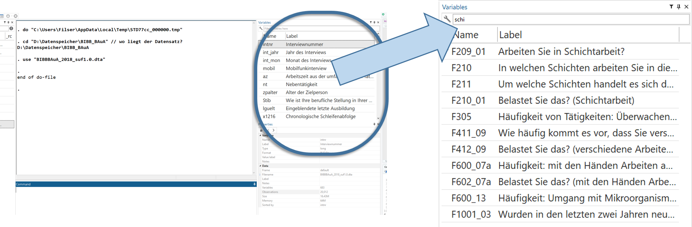
1.7 Übungen 1
Öffnen Sie Stata und öffnen Sie den DoFile Editor
Führen Sie folgende (oder beliebige andere) Taschenrechneraufgaben mit Stata durch:
2 * 42 / 82 ^ 2// (Potenz)sqrt(9)// (Wurzel)
- Lesen Sie die Erwerbstätigenbefragung 2018 in Stata ein. Folgende Schritte helfen Ihnen dabei:
- In welchem Arbeitsverzeichnis befindet sich Stata aktuell? Wo können Sie das erkennen?
- In welchem Ordner haben Sie den Erwerbstätigenbefragung Datensatz abgelegt?
- Navigieren Sie Stata mit
cdin diesen Ordner, in dem der Datensatz abgelegt ist!
- Nutzen Sie
describeundbrowse, um sich einen Überblick über den Datensatz zu verschaffen. - Wie viele Variablen und wie viele Fälle enthält der Datensatz?
- Unter welchem Variablennamen ist die Information abgelegt, ob der*die Befrage Kinder hat?
- Nutzen Sie
lookforoder die Suchfunktion im Variablenfenster. - Lassen Sie sich die Informationen zur Variable mit
describeanzeigen. - Wie heißt das angehängte Label? Inspizieren Sie es mit
labelbook. - Lassen Sie sich diese Variable im Datenexplorer mit
browseanzeigen. - Lassen Sie sich diese Variable mit den Zahlencodes (
nolabel) anstatt der labels anzeigen.
1.8 Profi-Übungen 1
Für alle, die noch etwas mehr machen möchten:
- Im zip-Ordner finden Sie auch eine SPSS-Version (.sav-Datei) der Erwerbstätigenbefragung 2018. Lesen Sie diese Dateiversion in Stata ein! (Siehe weitere Anmerkungen)
1.9 Anhang 1
1.9.1 Variablentypen
In Stata gibt es zwei Variablentypen:
Zahlenvariablentypen:
byte,int,long,float,double- der Unterschiede zwischen diesen Variablentypen besteht vor allem in der Spannbreite der möglichen Werte: währendbyteWerte zwischen -127 und 100 annehmen kann, können inlongzwischen -2,147,483,647 2,147,483,620 (Stata verwaltet diese Typen in der Regel automatisch - für weitere Hinweisehelp data_types)Textvariablen, sog. strings
strXX- wobeiXXdie Zahl der (maximal) verwendeten Zeichen angibt
In der BIBB/BAuA Erwerbstätigenbefragung 2018 sind nur Zahlenvariablen enthalten.
1.9.2 import anderer Dateiformate
Häufig liegen Datensätze nicht im .dta-Format vor, sondern beispielsweise als Excel-Tabelle (.xslx oder .xls), SPSS-Datei (.sav) oder als .csv-Datei.
Hierfür stehen alternative Importbefehle zur Verfügung:
import excelfür Excel Tabellenimport spssfür SPSS-Dateienimport delimitedfür csv-Dateien
Hier empfiehlt sich ein Blick in das Auswahlmenü unter File > Import:
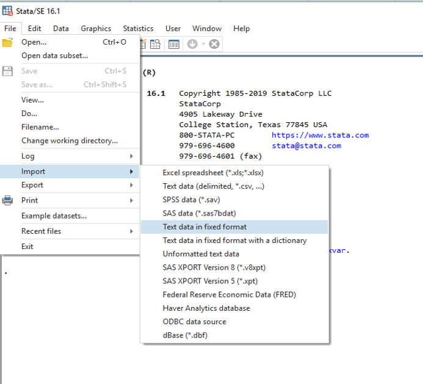 Nach Klick auf das entsprechende Dateiformat öffnet sich ein Dialogfenster, in das die gewünschten Optionen eingetragen werden können. Sind alle Optionen wie gewünscht gesetzt, gibt es unten gibt es die Möglichkeit, den so zusammengestellten Befehl nicht nur durchzuführen, sondern auch zu kopieren (um ihn beispielsweise in ein DoFile einzufügen): 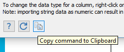